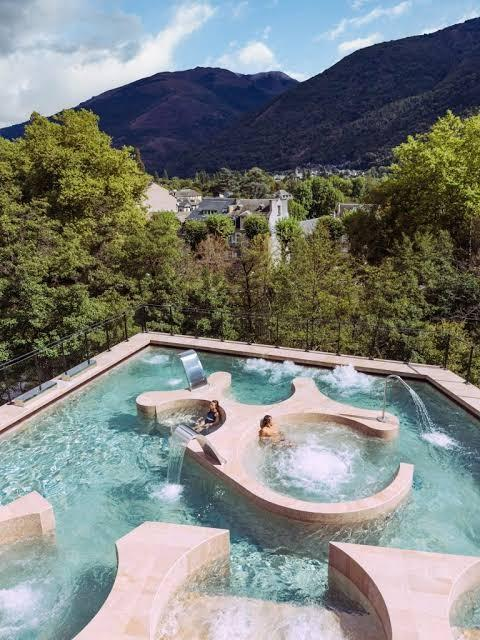
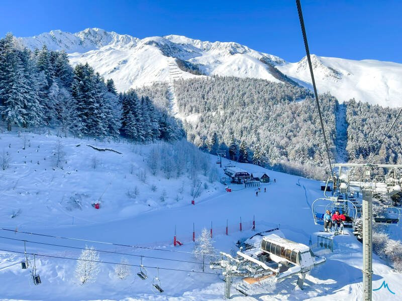
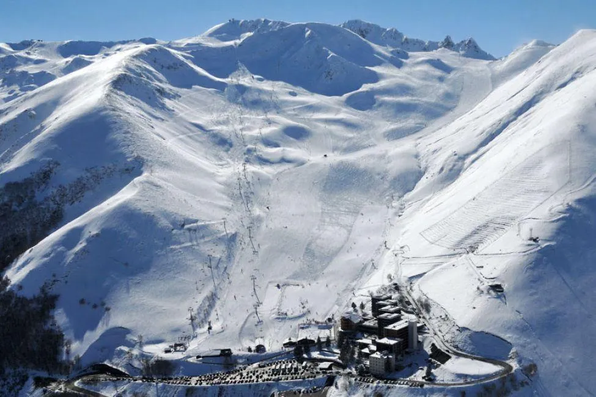

~1 kmLuchon thermal spa
Spa tradition dating back to Roman times, revived in the 18th century by Baron d’Étigny: medical cures, the Vaporarium (underground galleries heated by thermal steam) and a relaxation area in the town centre.

≈25 min · 18 kmLuchon-Superbagnères
Skiing, sledging and snowshoeing above 1,800 m, by road or by gondola (an 8-minute ride) from the valley. Viewpoint over the Aneto peak (3,404 m).

≈20 min · 17.7 kmPeyragudes
A second ski area nearby, known for its altiport where a scene of the James Bond film “Tomorrow Never Dies” was shot — since nicknamed “Altiport 007”.
 ≈25 min · 15 km
≈25 min · 15 kmLac d’Oô
A classic family hike (6.6 km return, 2.5–3 hours from the Granges d’Astau) to a glacial lake at 1,507 m beneath one of the highest waterfalls in the Pyrenees (~275 m).
 ≈15 min · 10 km
≈15 min · 10 kmLys valley & Hospice de France
The Cascade d’Enfer (70 m) can be reached on foot from the Lys valley car park. Further south, the Hospice de France (1,385 m) opens onto the GR10 and the Port de Venasque, towards Spain.
 all year
all yearOutdoor sports
Mountain biking, climbing, via ferrata, paragliding, canyoning, horse riding and treetop adventure for all levels, all year round around the valley.
 town centre
town centreBelle Époque heritage
The Allées d’Étigny (a 600 m tree-lined promenade, 1762), the Casino (1878-1880, listed historic monument) and the producers’ markets on Wednesday and Saturday mornings.
Maps, practical details and the local events calendar are on the French version of this page. Opening times and access can change from one season to the next.